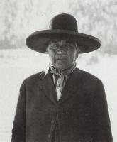
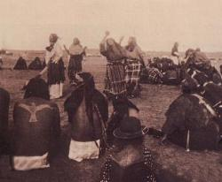

The Sioux Indian’s lives were destroyed. The buffalo were gone.
Themselves were confined to reservations dependent on Indian Agents for their
existence. All that changed when in a desperate attempt to return to
the days of their glory, many sought salvation in a new mysticism preached
by Wovoka, a Paiute Shaman. Emissaries from the Sioux people in South
Dakota traveled to Nevada to hear his words. He called his self the
Messiah and prophesied that the dead would soon join the kiving in a world
where they could live the old way in peace with plenty of game. To
hasten the event, the Indians were to dance the Ghost Dance.
|

This is Wovoka the Paiute Shaman.
|

This is a tribe dancing the Ghost Dance.
|